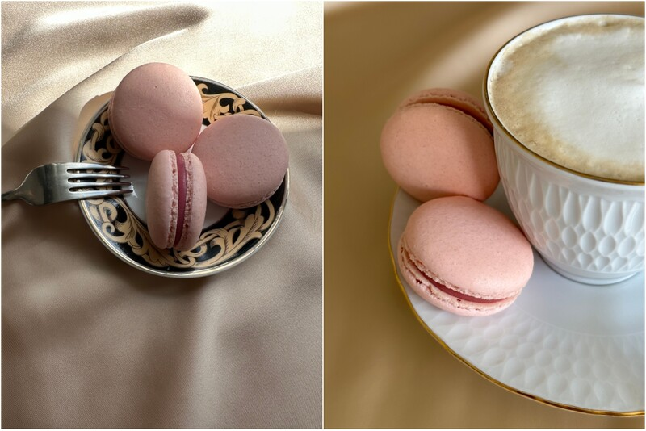

Tiešsaistes meistarklase "Makarūnu pagatavošana"



Piedāvājam jūsu komandai neparastu un mājīgu komandas saliedēšanas (team building) formātu — Premium tiešsaistes meistarklasi franču makarūnu pagatavošanā 🍰
Tas ir interaktīvs formāts, kurā dalībnieki nevis vienkārši vēro procesu, bet gan kopā, soli pa solim, gatavo desertu konditora vadībā. Šāds formāts ir lieliski piemērots attālinātām komandām vai hibrīda tipa kolektīviem.
Kas ir iekļauts:
- Tiešsaistes meistarklase tiešraidē
- Īstu franču makarūnu pagatavošana
- Soli pa solim atbalsts un vadība no konditora
- Kopīga gatavošana un komunikācija "live" formātā
- Viegla un nepiespiesta atmosfēra komandai
Formāts ir lieliski piemērots:
- Komandas saliedēšanas (team building) pasākumiem
- Korporatīvajām tiešsaistes sapulcēm
- Svētku pasākumiem darbiniekiem
- Kopīgam komandas brīvā laika pavadīšanai
Papildus iespējams organizēt:
- Sastāvdaļu kastes (ingredient box) piegādi dalībniekiem
- Pasākuma zīmološanu (brendēšanu)
- Mini konkursu par labāko rezultātu
- Tiešsaistes balsošanu un uzvarētāju noteikšanu
- Dāvanu sertifikātus darbiniekiem
Šāds formāts palīdz komandai atslābināties, aprunāties ārpus darba uzdevumiem un pavadīt laiku kopā dzīvīgā un draudzīgā atmosfērā 😊
Izmaksas:
Premium tiešsaistes apmācība — 75 EUR par dalībnieku